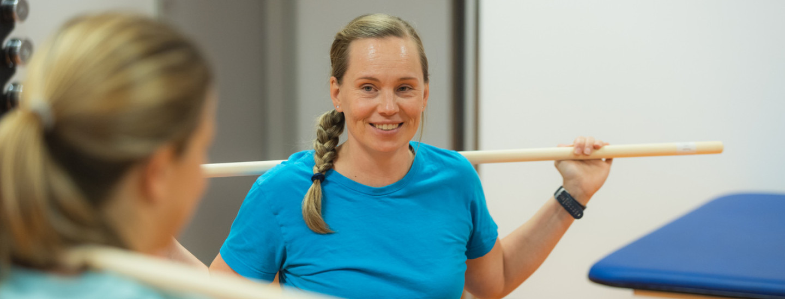

Asiointi
Keski-Suomen hyvinvointialue vastaa alueen sosiaali- ja terveyspalveluista sekä pelastuspalveluista. Palvelemme sinua niin puhelimitse ja verkossa kuin paikan päällä toimipisteissämme. Tältä sivulta löydät yhteystiedot palveluihimme.
Asioi Keski-Suomen hyvinvointialueella
Puhelin- ja verkkoasiointi
Terveysasemat, Sairaala Novan
yksiköt ja sosiaaliasemat
Muut toimipaikat
Löysitkö etsimäsi tiedon tältä sivulta?
Sivun palautetta käytetään verkkopalvelun kehittämiseen.